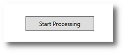

pcapfilescanner Frontend User manual¶
Revision date: Sep 26, 2020
Main Menu¶
The first step to do is to specify the capture files you want to have analyzed by the program.
Click the first button in the main menu: Start.
The main content area will switch to Choose Capture Files to be analyzed.
Specifying Capture Files¶
You have several options to specify the set of capture files to be analyzed. The list is built from your selections so you can combine some or all of these options.
Specify Capture Files – Add File¶
The Add File... button allows you to select a single capture file. After you selected
a file, the file is briefly checked for being a capture file and then added to the list.
Specify Capture Files – File List From File¶
The Import List From File button allows you to import a list of files to be analyzed from
a text file.
The text file must have each file to be analyzed on a line, with complete path.
Each file is briefly checked for being a capture file and then added to the list.
Specify Capture Files – File List From Clipboard¶
Similarly you can copy a list of files in the same format from an editor to the clipboard and
use the From Clipboard button.
Specify Capture Files – Drag and Drop¶
You can also drag and drop files from Windows Explorer into the designated area.
Specify Capture Files – Removing an entry¶
Clicking on the button Remove Entry allows you to remove the currently selected entry
from the list.
Starting the processing¶
When you’re done specifying the list of capture files to be process, click the button Start Processing.
You will have to confirm that the processing may take a while and then the processing starts.
Depending on many factors, the processing takes its time.
Processing time¶
The following factors influence the time it takes to process your capture files:
Disk read performance: how fast your hard disk/SSD/network drive can deliver the files. All files are read serially.
Complexity of captured network traffic: internal data structures can have an influence depending on e.g. the number of individual IP addresses encountered, the number of TCP connections encountered, etc.
If the program is not I/O bound – i.e. your disk can deliver the files faster than the program can process them – the memory speed may have a small influence.
Using the ScratchSpace¶
The program supports the short-term storage of arbitrary short text data and lists. This can be used by the user to store parameter data or for similar purposes in situations where the bulk processing leads to an overwhelming amount of data and one wants to further narrow down to a specific situation or event. The ScratchSpace can be used in these cases to temporarily store intermediate results and then recall the values later for e.g. filter inputs.
Outputs / Processing Results¶
In this section all the extracted metrics and processing results are listed together with a short explanation in the order of appearance starting in the main menu.
Layer 2¶
The Layer 2 section contains metrics and other statistics about the lowest layer of the network stack
reachable by software.
Layer 2 -> Ethernet Stats -> General Ethernet Stats¶
This menu entry displays the following the metrics:
Entry |
Description |
|---|---|
Eth Frame Count |
number of Ethernet frames |
Min Eth Frame Size |
the size of the smallest Ethernet frame |
Max Eth Frame Size |
this size of the the largest Ethernet frame (this doesn’t necessarily mean that a large frame has ever been transmitted over the wire, it could mean two or more frames have been merged by the capturing software infrastructure) |
Untagged Frames |
number of Ethernet frames without VLAN tags |
VLAN: single-tagged Frames |
number of Ethernet frames with a single VLAN tag |
VLAN: double-tagged Frames |
number of Ethernet frames with two VLAN tags (usually one used by the service provider and one used by the customer) |
IPv4 packets |
number of IPv4 packets in Ethernet frames |
Layer 2 -> Ethernet Stats -> MAC/Ethernet addresses encountered¶
- There are four submenus in this menu each showing a similar list:
MAC address
number of frames with that address
Name of Manufacturer which registered the MAC address range with the IEEE (we include the database with these names in the binary of this program, no online services are used for this resolution, so it’s safe for offline usage but might not contain the latest registrations)
Layer 2 -> Linux Cooked Stats¶
Capture files acquired on Linux systems can contain a pseudo Layer 2 format called Linux Cooked Mode/SLL.
The metrics contained in this list are similar to the ones in Ethernet Stats -> General Ethernet Stats.
Layer 2 -> ARP Stats¶
This menu entry displays the following the metrics:
Entry |
Description |
|---|---|
ARP Packet Count |
number of ARP packets (requests and replies) |
ARP Request Packet Count |
number of ARP Request packets |
ARP Reply Packet Count |
number of ARP Reply packets |
RARP Packet Count |
number of RARP (Reverse ARP) packets |
Layer 2 -> ARP Stats -> Extracted Address Mappings¶
Displays a list of extracted mappings between MAC addresses and IPv4 addresses. If a hosts’ IPv4 address changed in the duration of the processed capture files, only the latest mapping which could be extracted is displayed here.
If there’s demand for such a feature we can implement the history of per-host configuration changes extractable from ARP later.
IP¶
Displays a list of extracted metrics with a focus on IP:
Entry |
Description |
|---|---|
IPv4 packets |
number of IPv4 packets |
IPv4 packets in ethernet frames |
number of IPv4 packets found in ethernet frames |
IPv4 packets in IEEE802.11 frames |
all WiFi/WLAN (IEEE 802.11) related functionality is not fully implemented yet |
IPv4 packets in Linux Cooked Mode frames |
number of IPv4 packets found in Linux Cooked Mode frames |
IPv4 packets with wrong checksum |
number of IPv4 packets with a wrong checksum; this is not necessarily and indicator for problems as the checksum calculation could have been offloaded to the network interface |
IPv4 packets with Don’t Fragment flag set |
number of IPv4 packets with the DF flag set (gateways are not allowed to split a packet if this is set) |
IPv4 packets carrying fragments |
number of IPv4 packets carrying a fragment of a packet split by a gateway earlier in the route (usually happens when gateways have to change the Layer 2 and the target medium has a smaller maximum packet size, not very common anymore) |
IPv4 packets with IP options |
number of IPv4 packets containing IPv4 options |
IPv6 packets |
number of IPv6 packets |
IPv6 packets in ethernet frames |
number of IPv6 packets found in ethernet frames |
IPv6 packets in IEEE802.11 frames |
all WiFi/WLAN (IEEE 802.11) related functionality is not fully implemented yet |
IPv6 packets in Linux Cooked Mode frames |
number of IPv6 packets found in Linux Cooked Mode frames |
IPv6 packets with IP options |
number of IPv6 packets containing IPv6 options |
TCP¶
TCP -> General Stats¶
Displays a list of extracted metrics with a focus on TCP:
Entry |
Description |
|---|---|
TCP packet count |
number of TCP packets |
TCP/IPv4 packet count |
number of TCP packets in IPv4 packets |
TCP/IPv6 packet count |
number of TCP packets in IPv6 packets |
TCP/IPv4 gross traffic |
sum of the sizes of all TCP over IPv4 packets incl. Layer 2 |
TCP/IPv6 gross traffic |
sum of the sizes of all TCP over IPv6 packets incl. Layer 2 |
TCP/IPv4 skipped (no higher level mapping) |
number of TCP packets skipped because the program doesn’t have an upper layer processing component (applies to all TCP-based protocols which are unsupported by the program or use non-standard TCP ports) |
TCP/IPv6 skipped (no higher level mapping) |
dito for IPv6 |
TCP/IPv4 skipped (unsupported) |
dito but the program found a builtin mapping |
TCP/IPv6 skipped (unsupported) |
dito for IPv6 |
TCP/IPv4 skipped (unhandled) |
number of TCP packets skipped with the program having an upper layer processing component but that component either doesn’t support the specific format (yet) or found a format violation |
TCP/IPv6 skipped (unhandled) |
dito for IPv6 |
TCP full streams seen |
number of full TCP connections (from the initial handshake to the full connection termination sequence, does not imply that there couldn’t have been packets of the TCP connection lost or lost in the capturing process) |
TCP streams reset |
number of TCP connections which have been reset by one of the peers (RST flag) |
TCP streams w/ unexpected proto flow |
number of TCP connections which contain a sequence of TCP packets unrecognized by the program |
Rcv Win Scaling option: not offered, not used |
number of TCP connections not using the Receive Window Scaling option |
Rcv Win Scaling option: offered, not used |
number of TCP handshakes with: one of the peers supported the Receive Window Scaling option, but the other peer didn’t activate it |
Rcv Win Scaling option: used |
number of TCP handshakes with: both peers supported the Receive Window Scaling option and the option was active for the connection |
SACK option: not offered, not used |
number of TCP connections not using the SACK option |
SACK option: offered, not used |
number of TCP handshakes with: one of the peers supported the SACK option, but the other peer didn’t activate it |
SACK option: used |
number of TCP handshakes with: both peers supported the SACK option and the option was active for the connection |
Timestamp option: not offered, not used |
number of TCP connections not using the Timestamp option |
Timestamp option: offered, not used |
number of TCP handshakes with: one of the peers supported the Timestamp option, but the other peer didn’t activate it |
Timestamp option: used |
number of TCP handshakes with: both peers supported the Timestamp option and the option was active for the connection |
Some of these entries are not fully implemented yet.
TCP -> TCP source ports¶
Displays a list of extracted source TCP ports.
TCP -> TCP dest ports¶
Displays a list of extracted destination TCP ports.
DNS¶
Displays a list of extracted metrics with a focus on DNS:
Entry |
Description |
|---|---|
DNS/UDP/IPv4 packets |
number of DNS packets over UDP over IPv4 |
DNS/UDP/IPv6 packets |
number of DNS packets over UDP over IPv6 |
Query packets |
number of DNS query packets |
Reply packets |
number of DNS reply packets |
Reply no error |
number of DNS reply packets without error indication |
Reply format error |
number of DNS reply packets with the DNS server indicating a format error in the query packet |
Reply server failure |
number of DNS reply packets with the DNS server indicating that it failed to process the query packet because of a server failure |
Reply name error |
number of DNS reply packets with the DNS server indicating that a queried name could not be resolved |
Reply not implemented error |
number of DNS reply packets with the DNS server indicating that it hasn’t implemented the specific functionality requested by the client (or similar, these are generic errors and interpretation depends on specific server software used) |
Reply refused error |
number of DNS reply packets with the DNS server refusing to resolve the query |
DNS -> Queried Names¶
Displays a list of queried names via DNS. Queried names are primarily host names. Note that this list also includes names which couldn’t be resolved.
DNS -> Resolved Names¶
Displays a list of resolved names via DNS. Resolved names are primarily host names. These are names which have been queried by a host and a reply has been extracted which was sent by a DNS server.
DNS -> Unresolved Names¶
Displays a list of queried names for which no reply could be extracted, either because there was no reply or it got lost in the capturing process.
HTTP¶
This program can currently extract metrics and other data from unencrypted HTTP traffic only.
HTTP -> Request Targets (URIs)¶
Displays a list of request targets (URIs) extracted from HTTP traffic together with the value of
the HTTP Host header and the number of occurrences of the respective combination.
HTTP -> User Agents¶
Displays a list of User Agents extracted from the HTTP requests seen by the program, together with the number of occurrences.
HTTP -> Status Codes¶
Displays a list of HTTP Response Status Codes extracted from the HTTP responses seen by the program, together with the number of occurences.
HTTP -> Server Software¶
Displays a list of Server Software strings extracted from the HTTP responses seen by the program,
together with the number of occurences. The values of the Server header have been extracted
from HTTP responses for this list.
HTTP -> Content Types¶
Displays a list of HTTP content types extracted from the HTTP responses seen by the program,
together with the number of occurences. The values of the Content-Type header have been extracted
from HTTP responses for this list.